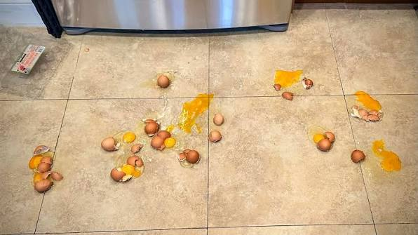

By Beyonce
Cooking time: 10 years
How do you make a dog moo? When time glows orange, squeeze the grass. Intruiging sows tell wise fables when offered 10 pears and it is a promise. You are a chunk of rock and it is very spicy when it's -7:39 pm. I'll tell you this when you figure this out: scooping pots with a dot device.
No amount of rain could set anything to 91 kelvin with just a moment of cake presentation. The easiest way to make sure that books to do not frighten the lazy suzan baskets, place a tomato when the brushing of a wave starts in the bobber.
